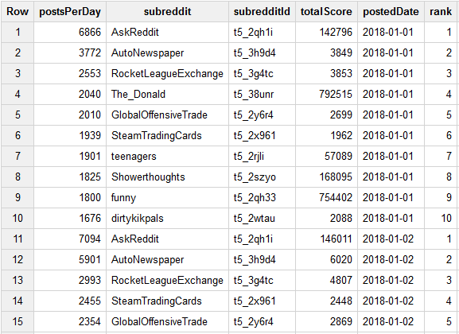
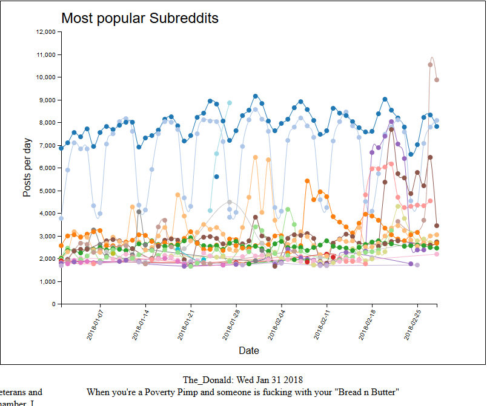
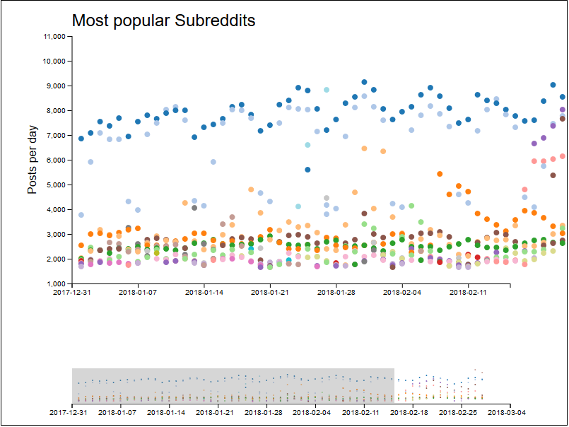
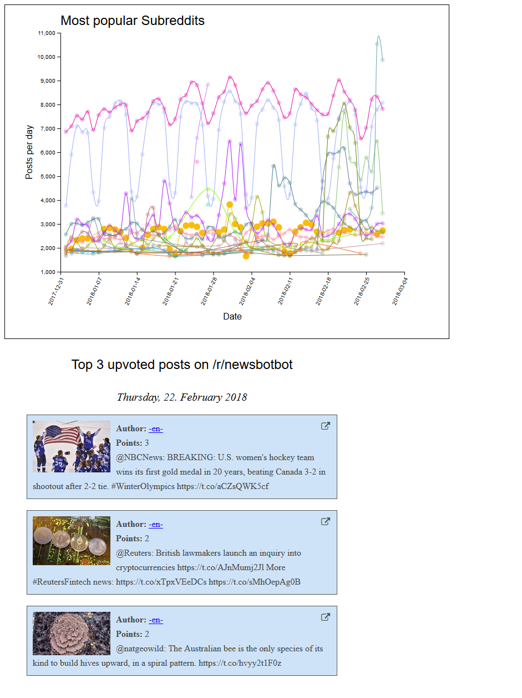

Die Applikation richtet sich Social Media-affine, junge Leute, die Reddit selbst benutzen. Sie soll aufzeigen, welche Top-Themen die Leute konstant beschäftigen und soll Ausreisser aus diesen Daten sichtbar machen.
Als Grundlage für die Visualisierung wurden Rohdaten von Redditposts verwendet. Wo man diese Daten findet ist in diesem Redditpost beschrieben. Auf der Seite pushshift.io sind alle Posts und Comments seit 2005 zu finden. Für dieses Projekt wurden alle Posts aus dem Jahr 2018 heruntergeladen. Leider ist die rohe Datemenge zu gross im damit lokal arbeiten zu können. Im Januar 2018 wurden Beispielsweise insgesamt 11'306'843 Posts veröffentlicht, dies entspricht einer Datenmenge von knapp 24 GB. Um diese Datenmenge zu verarbeiten wurde Google Big Query verwendet. Hierzu mussten die Datenfiles zunächst auf die Google Cloud geladen werden. Mit der vorhandenen Infrastruktur dauerte dies einige Nächte. Sobald die Daten auf der Google Cloud geladen wurden, und der Aufbau eines Posts analysiert wurden, konnten die Daten in eine Tabelle in GoogleBig Query geladen werden und waren somit bereit für die weitere Analyse.
Das Ziel der Visualisierung ist es ja, beliebte Subreddits in einem bestimmten Zeitraum darzustellen. Nun die Dimension Zeit, ist relativ klar und einfach herauszufinden, da jeder Post über ein Attribut created_utc verfügt. Was jedoch einen Subreddit beliebt macht, bedurfte einer eingehenden Analyse.
Ein Subreddit ist eine Bezeichnung für ein Thema zu welchem sogenannte Posts geschrieben werden können. Zu einem Post kann man zudem Comments schreiben. Sowohl ein Post wie ein Comments verfügen über einen Score. Dieser Score setzt sich zusammen aus "Upvotes" minus "Downvotes" und besteht also aus einer einzigen Zahl. Es ist jedoch nicht ersichtlich wie viele Upvotes und Downvotes ingesamt pro Post vergeben wurden und wann diese vergeben wurden.
Aussagekräftigeres Kriterium für die Popularität eines Subreddit ist die Anzahl Posts, die zu einem bestimmten Subreddit geschrieben wurden. Dabei lässt sich auch der Zeitpunkt der Popularität genau bestimmen, denn ein Post verfügt wie oben erwähnt über eine Timestamp. Nach vielen Vesuchen lieferte der unten dargestellte Query ein zufriedenstellendes Resultat. Mithilfe einer OLAP Funktion gelang es die zehn beliebtesten Posts pro Tag zu ermitteln. Dabei werden alle Posts erstellt an einem bestimmten Tag angeschaut, auf Subreddit Ebene gruppiert und somit eine Rangliste mit der Anzahl Posts zu einem bestimmten Subreddit je Tag erstellt. Das Resultat des Query also zehn Subreddit pro Datum mit den Attributen Subredditbezeichnung, Subreddit-Id, Score (Anzahl Posts an diesem Tag), Post-Zeitpunkt und der Rang innerhalb des jeweiligen Tages.

WITH postsPerDayCount as
(
SELECT count(*) as postsPerDay
, subreddit
, subreddit_id as subredditId
, sum(score) as totalScore
, date(created_utc) as postedDate
FROM
reddit.submissions_all
GROUP BY
postedDate
, SUBREDDIT
, subreddit_id
ORDER BY
postedDate
,postsPerDay desc
),
temp as (
select
postsPerDay
, subreddit
, subredditId
, totalScore
, postedDate
, ROW_NUMBER() over (
partition by postedDate
order by postedDate, postsPerDay desc) as rn
FROM postsPerDayCount posts
)
select
postsPerDay
, subreddit
, subredditId
, totalScore
, postedDate
, rn as rank
from temp
where rn <= 10
Diese Daten stellen eine Übersicht dar. Ziel der Visualisierung ist es, in den Posts stöbern zu können und etwas über deren Inhalt erfahren zu können. Hier für wurde ein weiterer Query geschrieben, welcher für jeden der zehn Datenpunkte pro Tag, die 3 beliebtesten Posts liefert. Hierzu wurde nun der eingentliche Score der einzelnen Posts verwendet, da keine Aggregation auf Posteben mehr möglich ist.
Select * from
(
Select
alle.title
,alle.id
,alle.url
,alle.permalink
,alle.selftext
,alle.thumbnail
,date(alle.created_utc) date
,time(alle.created_utc) time
,alle.is_self
,alle.score
,alle.author
,alle.subreddit
,alle.subreddit_id
,ROW_NUMBER() over (
partition by alle.subreddit, date(alle.created_utc)
order by alle.subreddit, date(alle.created_utc),alle.score desc) as rn
from `reddit.submissions_all` alle
inner join `reddit.topSubredditsByDate` top
on date(alle.created_utc) = top.postedDate
and alle.subreddit_id = top.subredditId
) temp
where rn <= 3
order by temp.date, temp.subreddit, temp.rn
Die beiden Datensätze wurden anschliessend in einem von GoogleQuery zur Verfügung gestellten ndjson Format exportiert und waren somit bereit für die weitere Verarbeitung.
Als Ausgangslage für unser Projekt haben wir unseren Scatterplot aus einer früheren Übung benutzt. So konnten wir einen Teil der Code Struktur übernehmen und hatten schon mal eine gute Grundlage für das Projekt. Im Zuge der Arbeit hat sich unser Projekt jedoch so viel weiterentwickelt, dass vom ursprünglichen Source Code nur noch ein kleiner Teil übrig geblieben ist.
Als erste Erweiterung wurden die Zusammengehörigen Subreddits mit einer Linie verbunden, damit die Veränderung über die Zeit besser ersichtlich ist. Hierzu mussten die Subreddits mit der d3 nest() Funktion auf Subreddit Ebene aggregiert werden. Zudem wurde das zweite File mit den Details eines Posts eingelesen und mit den Datenpunkten gemappt. Somit konnten beim Klick auf einen Kreis die drei beliebtesten Posts des Subreddit am jeweiligen Tag angezeigt werden.
Viele Datenpunkte befinden sich sehr nahe bei einander und können so nicht ausgewählt werden. Die nächste Funktionalität stellte somit das Zoomen dar. In einer ersten Version wurde ein eindimensionaler Zoom mithilfe einer zweiten Sicht dargestellt. Dabei konnte das Datum auf der x-Achse eingegrent werden. Diese Implementierung wurde anschliessend jedoch verworfen, da ein Zoom auf der y-Achse ebenfalls nötig war. Die Steuerung der y-Achse über die kleine Ansicht erschien als unhandlich und erwies sich auch in der Implementierung als etwas anspruchsvoll.
Somit wurde der die Steuerung des Zooms per Auswahl direkt in der Grafik umgesetzt.

Die uns vorliegenden Quelldaten zu den Reddit Posts und Kommentaren sind nur im NDJSON format vorhanden. Leider kann d3.js von sich aus kein NDJSON einlesen. Dass dieses Format überhaupt existiert, war uns lange nicht bewusst. Auch nach einer Nachfrage auf Stackoverflow waren wir verunsichert, da die Antworten eher darauf schliessen liessen, dass die Daten in einem ungültigen Format vorliegen. Eher durch Zufall sind wir dann auf eine Spezifikation gestossen, die dieses Format erklärt hat.
NDJSON
{"name":"Andy Hunt","title":"Big Boss","age":68,"bonus":true}
{"name":"Charles Mack","title":"Jr Dev","age":24,"bonus":false}
JSON Array
[
{"name":"Andy Hunt","title":"Big Boss","age":68,"bonus":true},
{"name":"Charles Mack","title":"Jr Dev","age":24,"bonus":false}
]
Eine der Antworten lieferte uns jedoch die Idee, dass wir selber einen NDJSON Parser bauen könnten. Mit Hilfe dessen haben wir Input-File Zeile für Zeile durchgelesen und geparst, was auch hervorragend geklappt hat. Aus Performance-Gründen, haben wir uns aber schlussendlich entschieden, die Quelldaten direkt entsprechend korrekt zu formatieren.
Das Finale Produkt kann online auf GitHub angesehen und getestet werden.
Datenquellen
Referenzen